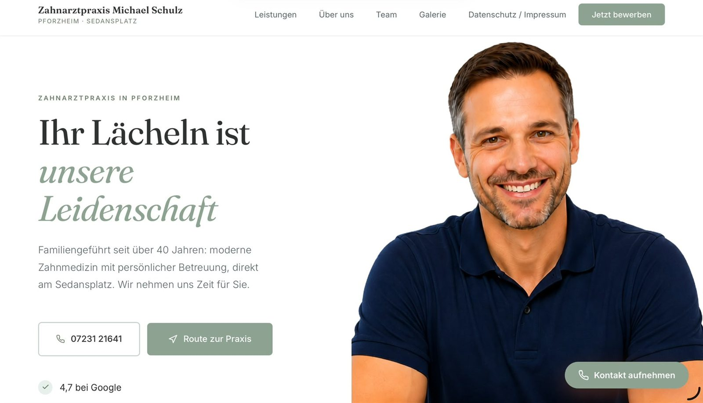
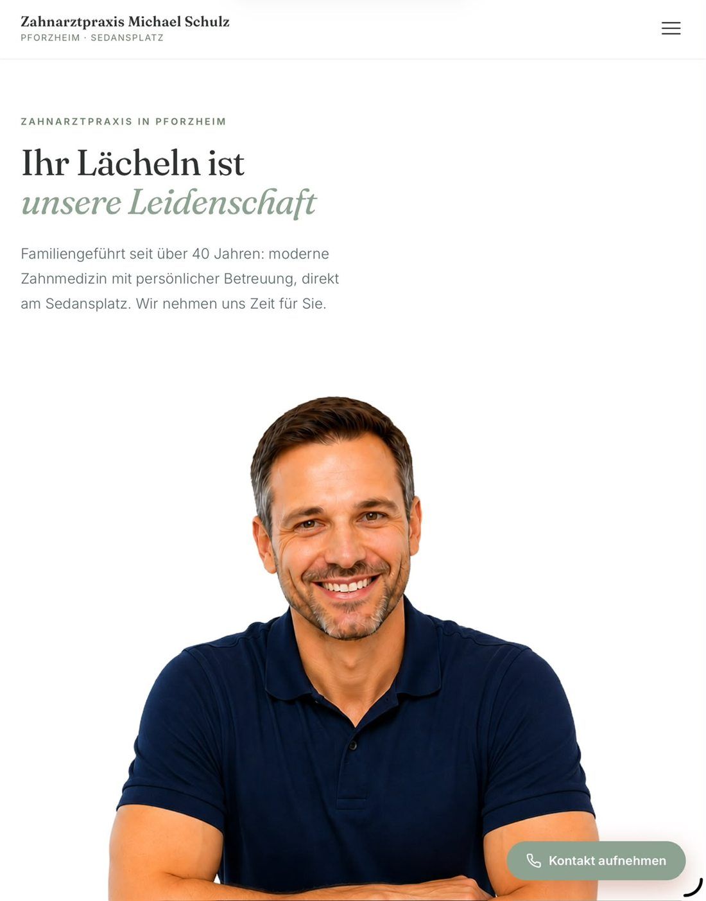
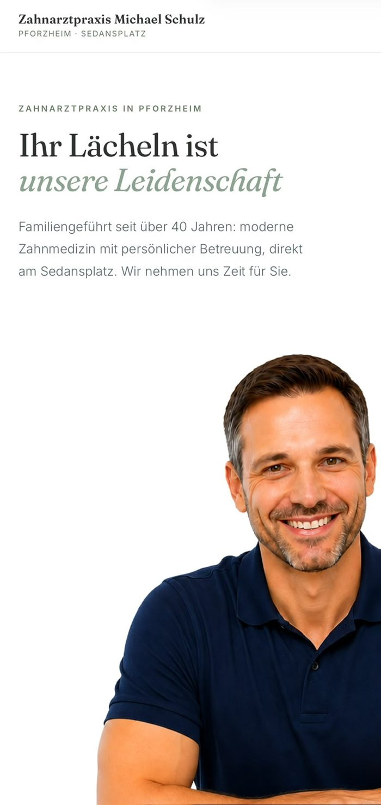

[DEIN NAME]
Ihre Praxis verdient eine Website, die Patienten wirklich erreicht.
Von Hand gebaut für Praxen in Pforzheim und Umgebung — schnell, aufgeräumt und bei Google auffindbar.
-
Einfach
Kurzer Satz, der erklärt, was daran einfach ist.
-
Etwas Gutes über mich
Ein Punkt, der für dich spricht — kurz und ohne Werbesprache.
-
Was finden wir noch heraus
Der dritte Punkt aus deiner Skizze — Text kommt von dir.
-
Platz für Nummer vier
Noch frei. Kommen mehr als vier, rutscht es automatisch in eine zweite Reihe.
Ein Ansprechpartner. Vom ersten Gespräch bis nach dem Launch.
Hier kommt dein persönlicher Text hin: wer du bist, wie du zum Webdesign gekommen bist, was dich ausmacht.
Zweiter Absatz: Was ein Kunde von der Zusammenarbeit mit dir erwarten kann. Zum Beispiel, dass du erreichbar bist, verständlich erklärst und nach dem Launch nicht verschwindest. Diesen Text schreiben wir gemeinsam im Interview.
bilder/ legen
Ein echtes Gesicht schlägt jedes Stockfoto.
Vier Bausteine, damit Ihre Praxis online funktioniert.
Links auswählen, rechts steht alles im Detail. Alles aus einer Hand — Sie müssen sich nicht um Technik, Anbieter oder Zuständigkeiten kümmern.
Woraus Ihre Website zusammengesetzt wird.
Jede Praxis braucht etwas anderes. Das hier sind die Bausteine — Sie suchen aus, was zu Ihnen passt, den Rest lassen wir weg. Und weil es sich anbietet: schieben Sie die Steine ruhig herum. Genau solche Einfälle meine ich, wenn ich von Kreativität und Programmierung rede.
-
Zum Spielen 🧩
Steine verschieben — ein Feld bleibt immer frei.
-
Sprechzeiten
Die meistgesuchte Angabe überhaupt — immer sichtbar, ohne Klick.
-
Team & Ärzte
Ein Gesicht zum Namen schafft Vertrauen.
-
Leistungen erklärt
In verständlicher Sprache statt in Fachbegriffen.
-
Terminanfrage
Nimmt Anfragen entgegen, wenn niemand ans Telefon geht.
-
Anfahrt & Parken
Karte, Bus und Bahn — und wo das Auto hin soll.
-
Notfall-Hinweis
Was tun außerhalb der Sprechzeiten?
-
Stellenanzeigen
Personal finden ist schwer genug.
-
Praxis-Rundgang
Wer die Räume vorher sieht, kommt entspannter.
Weil gute Arbeit es verdient, auch gut auszusehen. 🙂
Hier kommt deine Haltung hin — in deinen eigenen Worten, ohne Werbesprache.
Zum Beispiel: was dich an sauber gebauter Technik begeistert. Warum eine Praxis mit vier Mitarbeitern dieselbe Sorgfalt verdient wie ein großes Unternehmen. Was du empfindest, wenn eine Seite nach dem Launch einfach läuft und der Kunde sich nicht mehr melden muss. Ehrlich erzählt überzeugt das mehr als jeder Werbetext.
Wo ich gelernt habe, was ich kann.
Die Stationen meiner Ausbildung — fachlich und praktisch.
Abschluss oder Ausbildung
Wo, was, und was du dort konkret gelernt hast, das dir heute nützt.
Weiterbildung oder Kurs
Auch Selbstgelerntes gehört hierhin — wichtig ist, dass man sieht, dass du dranbleibst.
Zertifikat oder Nachweis
Wenn du etwas Offizielles hast, kommt es hier hin.
Selbstständig — Websites für lokale Betriebe
Was du machst, für wen, und womit du dich am besten auskennst.
Frühere Station
Auch Erfahrung außerhalb der Webentwicklung zählt — sie erklärt oft, warum du Kunden gut verstehst.
Noch frühere Station
Kurz halten. Zwei Sätze reichen.
Was ich bisher gemacht habe.
Ein oder zwei Sätze, die den roten Faden erklären — wie eins zum anderen geführt hat.
Zahnarztpraxis in Pforzheim



Eine Praxis-Website, die Vertrauen aufbaut.
Eine komplett neu gebaute Website für eine Zahnarztpraxis: ruhiges, warmes Design, klare Struktur für Leistungen und Team, alle Angaben zu Sprechzeiten und Anfahrt sofort auffindbar — und ein Ablauf für Terminanfragen, der auch auf dem Handy funktioniert.
Die Seite geht in Kürze online. Sobald sie freigegeben ist, findest du hier die ausführliche Fallstudie mit Vorher-Nachher.
Was Kunden mich vorher fragen.
Was kostet eine Website bei Ihnen?
Wie lange dauert es, bis die Seite online ist?
Muss ich Texte und Fotos selbst liefern?
Kann ich die Seite später selbst ändern?
Was passiert nach dem Launch?
Arbeiten Sie auch außerhalb Ihrer Region?
Lassen Sie uns kurz sprechen.
Ein unverbindliches Erstgespräch, in dem wir klären, was Ihre Praxis wirklich braucht. Ohne Verkaufsdruck, ohne Kosten.
Der Knopf öffnet Ihr Mailprogramm mit einem fertigen Text.
Klappt das nicht, schreiben Sie einfach an
platzhalter@beispiel.de